MEMORIES OF EVAN HEWITT BARTON
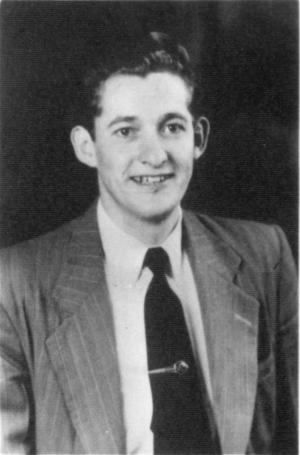{kind=link}
In 1986 Bodell asked family members to write their memories of her father, Evan Hewitt Barton. She typed them with her comments in brackets. They are as follows:
From Thora Norton, his eldest sister, came a picture of a knight on a horse. On the other side of the page it says “MEN OF IRON”
From the time Evan H. was ordained to officiate at the Sacrament Table, because our mother was so proud and happy and thought him so handsome and good I began to have a special term of endearment for him. Often in thinking of him; even when speaking of him in family and especially when I wrote to him personally, I called him Sir GALAHAD.
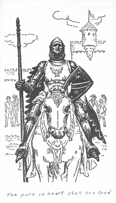{kind=link}
If you have read books or stories of King Arthur and the Knights of the Round Table you may understand why. A few of the attributes ascribed to that knight who succeeded in obtaining the Holy Grail were: beauty and strength … a noble bearing which seemed to indicate high ancestry. The nuns who trained him in his youth told him”Keep your heart pure” and that he was a child of God. Galahad tried to live in the ways they taught him. He was a lovable boy. As a knight his courage never failed him. Ever he watched for the down trodden and those who were hurt. My dear brother was so welcome and loved in our family of girls. Some townsfolk said he was spoiled and sissified but we knew his gentleness and kindness and love came from his Pure Heart.
From Joel Norton, a nephew
I don’t suppose that I am the one who originally contracted Evan H. to “Nache”, but I probably had a lot to do with making it stick. Somewhere back in my memory, it seems that Grandma Barton wanted him to be called Hew, my parents seemed to prefer Evan H., but for me it was always “Nache.”
My earliest recollections of him are associated with the old San Juan County Courthouse located in Monticello on second East street about halfway between first and second North on the West side of the street. It had been made into a home and Grandma and Grandpa Barton were living there with Aunt Afton and Uncle Nache.
Quite often my mother would go to Grandma’s to do her laundry, her canning, or other homemaking tasks, and Naydeen, Gerard and I would go along to “help.” Of course, most of the time was spent in play, including hide-and-seek, often encouraged by Afton and Nache as they helped to keep us entertained. I recall that the house held an unusual fascination for me with its dark cool pantry, its back porch with the cream separator, and its back stairway leading to the second floor bedroom.
Even though Nache was fourteen years older than myself, he aways showed interest in me, and treated me as a real friend. It is no wonder I grew up idolizing him. Quite often I was made to feel awfully proud when one or another of our ward members would tell my parents how much I looked like him.
During the summer of 1947 while I was still only seven years old, I was taken to the farm out east with Grandpa Barton. I remember at the time some of the fields had rows and rows of pinto beans, and Grandpa Barton was recruiting everybody he could to help hoe out the weeds. There were Aunts, Uncles, cousins and hired Indians marshaled for the destruction. It was no surprise to see Nache leave us in his dust as he set the pace down the rows.
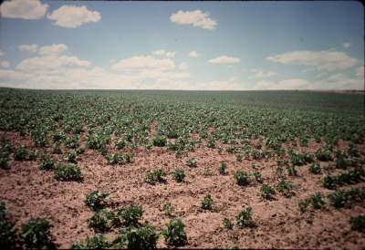{kind=link}
I do not recall all of the details, but I am certain that during this period of them there was a lot of talk about Nache going on a mission. At one point it looked like he would not be able to go lacking necessary finances. He instead volunteered for military service, but was turned down as a volunteer for, as I recall health reasons. Consequently the opportunity for a mission was again an option and through the support of the Lockerby Brand h in the fall of 1947 he answered the call to serve in the Central States. Once again I made up my mind to follow in his footsteps.
I remember how impressed I was with Nache’s commitment to serve the Lord. When Grandpa Barton passed away in July of 1949, Nache chose to remain in the mission field rather than cut his mission short by coming home to the funeral or by returning to care for the farm. One of the side lights of his mission was the opportunity to become acquainted with the history of the famous Sergeant York who lived in that part of the country. Nache was very determined after his mission that we all go with him to see the Gary Cooper movie if it should come to Monticello. I recall that it did.
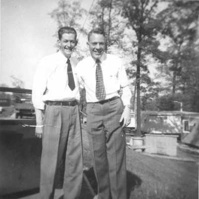{kind=link}
When he finally returned in the late fall of 1949, was determined to spend as much time with Nache as possible. It seems though that Sundays were about the only time available, and I would alway try to sit with him during Sacrament meeting. One particular Sunday I asked if I could again sit with him, but he kindly told me that he would be sitting with someone else this time. Imagine my surprise when I discovered him sitting with my fourth grade teacher Miss Sariah Bushman.
During this period of time, It seems that “Uncle Sam” had a knack for sending his greetings to young men returning from missions almost immediately upon arriving home. Notwithstanding his previous rejection, Nache was drafted into the army. Shortly after entering boot camp he developed serious health problems and was later extended a medical discharge.[Really this happened after Norma and Evan H. were married.] Fortunately he recovered sufficiently to take up care of the farm, and I was overjoyed that he invited me to be his companion and helper during the summer and out- of-school months.
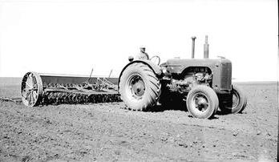{kind=link}
The summer of 1950, I was not yet old enough nor had I enough experience to take on any responsibility on my own. Consequently most of my time was spent just riding around with him in the pickup or on the tractors. One day while plowing in the field with the Massey Harris tractor, from my position by the fender I was watching the ground turn over behind us. For some reason, maybe to feel more in tune with the machinery, I started to moan a low humming noise in rhythm with the tractor. I didn’t think it was loud enough to be heard, but suddenly Nache stopped the forward movement of the tractor and just sat for a moment listening to the engine run. He looked over at me and said, “Did you hear that?” Of course, I was startled and quit humming. The he asked if I was the noise maker. When I admitted that I was he said, ‘Don’t scare me like that, I thought there was something wrong with the tractor.” In another occasion we were cultivating the bean fields with the little Case tractor. At each end of the row the cultivator was lifted out of the ground so the tractor could turn around. I just knew that it would be more fun to ride on the cultivator than to just stand at the fender. I asked Nache if it would be all right form me to sit on the cultivator so that I could experience the up and down motion as well as the ride through the field. He granted me permission as long as I would hold on real tight and be very careful. After a couple of trips up and down the field I stared to feel pretty sure of myself, and I forgot to watch out for my feet. One of them had shifted and at the next end-of-roe when the cultivator was raised my foot was caught between a bar of the implement and the metal shield guarding power take off shaft on the tractor. Fortunately there was just barely enough room for my foot and I escaped without broken bones. However my instep was badly bruised and it was difficult to walk around for some time. I was extremely impressed with Nache’s concern for me. Rather than criticize me for being so careless, he showed me genuine compassion and throughout the rest of the day he was asking me about my well being. These were characteristics that I saw in him all of his life. They were further demonstrated when, after he was married, he opened his home and heart to a young Indian boy from the reservation.
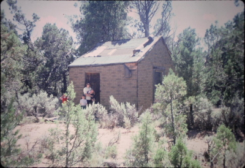{kind=link}
There was another experience on the farm that left an impression on me about another of Nache’s characteristic traits. Some how a copy of Anna Sewell’s book “Black Beauty” was left in the cabin. In the quiet of the evening as we sat up in bed together Nache began to share with me this narrative of a most wonderful of God’s creatures. It was really thrilling to see Nache so wrapped up in the story, and especially how he got such a kick out of reading it from the horse’s point of view in the first person. [Bodell remembers Daddy reading books to Mama in the long winter evenings. Some were “The Robe”, a book about Christ, and “The Physician”, a story about the disciple, Luke.]
Another example of his fun loving nature occurred at our home in Monticello just shortly after Dad had invested in the radio console which included a record player and a wire recorder. Nache came to our home extremely anxious to share with us a recording he had purchased. We put the record disc on the machine and turned up the volume. “The Song of the Wild Goose” resounded throughout the house. Nache was only a little embarrassed when Dad yelled out from the bedroom where he had been asleep, “Turn that thing off!” [Uncle Wesley usually worked nights]
It wasn’t long before I was given more responsibility on the farm, and with it came a small wage (compared to today’s), but for me at that time it was enormous! Nache trained me in tractor driving and the use of the different implements pulled in the fields. I learned to do the plowing and harrowing with the big tractor, as well as weeding with the one-way disc plow and the rod weeder. Nache would assign me my task in one field then he would handle the more delicate operations of row planting and cultivating in another field. My learning to drive the tractors eventually led to Nache’s teaching me to drive the pickup. More than once I tried his patience with my over confidence, and ran us off the road by going to fast around corners, or by gazing out the window at anything, but the road.
It was important to Nache that I develop a sincere interest in the operation of the farm even as young as I was. To encourage that , he set aside about four acres of cleared land, and he told me it was mine to use for whatever I wanted. It seemed that winter wheat would be the easiest crop to start with, so together we prepared the land and planted the seed. When it was time for the harvest, he paid me for the wheat we got out of it.
Needless to say, it was a great disappointment to me that my work on the farm with Nache had come to an end. After a couple of summers, he got all of the work organized to where he could handle it himself. All of the income of the farm was needed to support his young growing family, and Nache was anxious for me to have an income as well. So he encouraged me to find summer work elsewhere, and I was successful because of the training he had given me and the recommendation he made. I’ll always be grateful for what he did for me.
Of course our association was not limited to the farm. In April of 1952, the first year I was a deacon, I had the opportunity of going to General Conference in Salt Lake City. To make the trip from Monticello to Salt Lake was a treat in its self, but it was particularly special to go at conference time. On this occasion, my father, uncle Trav, Nache and I all shared this experience together. It was truly exciting to be a part of the conference crowd, and partake of the spirit there. As we were returning home and got to “Poverty Flat” down by Moab, Nache shared with us the significance of “Blue Hill” for the Monticello Scouts when he was that age. That was the signal for an immediate rest stop.
When I was old enough to be ordained a teacher in the Aaronic Priesthood, my father was out of town and did not want me to wait until he returned. Without question, my choice for a stand-in was Uncle Nache, and he performed the ordination and gave me a special blessing for which I was truly grateful.
A few years later Nache accepted the invitation to speak at my missionary farewell and upon my return, I was given the opportunity to report my mission to the Eastland Branch where hew was presiding. [Bodell remembers going to either Jerry’s or Joel’s farewell or homecoming in the Monticello chapel.]
To my delight, my association with Nache was further nourished at another time when he and my father became partners running the flour mill in Monticello. Once again we had the opportunity to rub shoulders in a work environment. The highlight of this period of time, was the trip I took with Nache to the Navajo Mountain Trading Post. It was on this occasion that Nache fulfilled the wish of taking a picture of Monument Valley through that little hole in the rock by the side of the road. As luck would have it, we were able to include a wagon load of Navajo Indians in the picture. The trip took a couple of days, and included traveling over roads that at times consisted of nothing more than sheep trails, or unmarked paths over bedrock. It was a real thrill to once again have the opportunity to share some real fun times with my fun loving friend and Uncle.
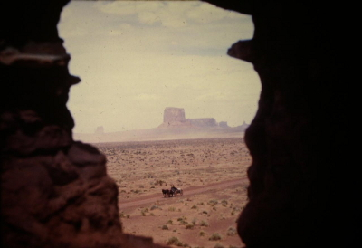{kind=link}
I should say a word or two about Nache the “great white deer hunter.” After all, it was he who taught me who to shoot a rifle. I should have guessed what was in store that day when I witnessed him get a real good buy on his 300 Savage. I recall his being on the south peak of the Blue Mountain with Dad and I shooting everything in sight. It’s a good thing between the three of us we had enough deer tags. Dad said, “He sure did brother-in-law us today.”
Then there was the time he and my father went back out to the field after dark. They had been hunting on the farm, and had spotted a big buck in one of the wheat fields just at dusk. Nache said, “Lets go rig up a spotlight with a lamp from the tractor and come back.” That deer had no chance.
One time the three of us were hunting below Doyle’s Spring on Coal Bed. Once again, just at dusk, the big buck was spotted, shot at, and apparently hit. He ran into the woods toward the canyon leaving a trail of blood. With Nache leading the way we went after him. We reached the canyon just as it got too dark to follow the trail. All at once, Nache yelled out ahead of us, “Here he is!” The deer’s antlers were caught in the brush, and due to loss of blood he no longer had the strength to free himself. One more shot finished him off. The deer was so big he had to be cut in half to get him out. It took two men with each half, and it was so dark we couldn’t see where to go. One half was moved in the direction of the truck while one of us stayed behind with the second half. Then one man would find his way back by calling out and following the vocal guidance of the other. Then these two would move the second half toward the voice of the third man. This procedure was repeated several times until the truck was located. Nache could always find the big one, but we sure had to work for them.
There was only one time that I can remember that I questioned Nache’s judgment and I say that just in fun. Shortly after he was married, I was given cause to wonder about the girl he had picked for his wife. The three of us were out to the farm together and while Nache was busy with machinery repairs or something Aunt Norma was getting better acquainted with me. To encourage our friendship, she asked me if I would like a jelly bean. Of course, it sounded good to me and I popped it right into my mouth. As I bit into it I realized that it was not a jelly bean, and Aunt Norma laughingly told me that it was a moth ball. It made me cry to be tricked and laughed at like that, but I got over it as I began to realize that Aunt Norma was also just being a fun loving companion to Nache, as he was one himself.
All in all, Nache had a great influence in my life, and I’ve always admired the real Christian person that he was. Probably the highest compliment ever paid him and the one he deserved the most was when someone [Uncle Albert] said, “He is like Nathaniel of Old, a man without guile.”
As a final tribute enclosed is a copy of a letter Nache sent to Elna Ruth and I that I want to share with you. [copy included]
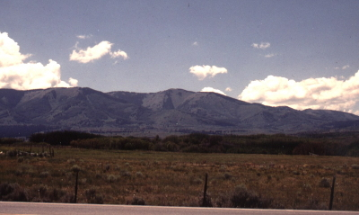
{kind=link}
From Eloise, a sister
Quite often in the summer we would take a few days vacation as a family into the Blue Mountains just to relax and enjoy the cool. Sometimes we went with Uncle Alpha and some of his family, and sometimes with just our family, or including a friend or two of the older girls. I remember one year daddy was letting the big girls get up early to hike with him to the top of the mountain to see the sun come up east of town and I was disappointed that I was little, the same as Afton and Hew, instead of big like Audra and the other girls.
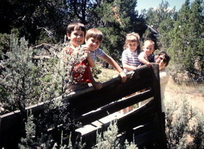{kind=link}
We didn’t have a car so these trips were made with horses and wagon. If riding horse were available they were taken along too, but at times we didn’t own any. At first we had wagons with big wooden wheels and iron tires, but I believe the last time or two we had rubber tires which made for much more comfort in riding and ease for the horses pulling. We enjoyed reading and games in the cool mountain breezes, hiked to old mine sights, picked berries, if they were ripe and had campfire programs every night. Cold mountain streams furnished great drinking as well as automatic refrigeration. Although Daddy sometimes helped with cooking at home, on these trips he was chief cook and dutch oven master. Of course Mom had cooked several days in preparation for our feasts.
I remember playing ball(with a makeshift basket or a round stick depending on the type of ball); marbles, and riding “stick horses.” Sometimes we included Afton but sometimes we didn’t. We were reminded that wasn’t kind, but you know how threesomes often go, we sometimes ran off.
When we were older, I was likely in high school, we ice skated some in the winter. Our skates were old ones our folks and the older girls had used. We fastened them onto our shoes(rather hard on shoe soles.) One year our “rink” was in a field not far from home where a water line going to a corral broke and flooded. One year we made a small rink in our own back yard and a year or two we skated on the town pond that was located west of where Thora and Wesley later lived. I even remember a very amateur game of ice hockey with “Hewbert” and some of his buddies.
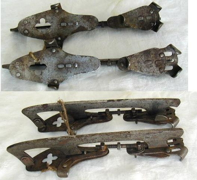{kind=link}
Sometimes we had to work— hoe weeds; herd cows or drive them to and from pastures out of town; and we milked once in a while when Daddy was gone, but since we both had hay-fever we didn’t have to when Dad was home.
For a number of years Oral seemed to be the only one of us kids afflicted with hay-fever, but one summer our neighbors had a granary with a big bin of wheat in it and we spent many an hour playing in the wheat. I believe that was when we really found out what hay-fever was.
There weren’t many boys in our neighborhood, but the Eagleburger family who lived across the street and around the corner had a couple of boys. They were somewhat older than E.H. and didn’t belong to the church but we all played together a great deal until we were out of grade school, at least, I’d guess.
After mother had worked a year or so for Uncle Alpha in the Post Office she bought a piano and started we three youngest kids on lessons. It was great for a few weeks, but then practicing was for the birds and Mom told us we were old enough to practice on our own. If we wanted to play she would pay for lessons, if we practiced. Afton was the one that stayed with it long enough to learn to play some. We two gave up pretty quickly.
Family Home Evenings weren’t the in thing as we grew up, but our family had them off and on. Not much in the summer I think because Daddy worked from before daylight until after dark at the shop and Mother did at home. We always had a big garden, pigs and cows and sometimes chickens. We hauled wood for our fuel and I’m sure as soon as E.H. was old enough he went along on those occasions. One or more girls went before that because Mother didn’t like Daddy to go by himself, although he surely did many a time.
We were always a close family–most families were in those days–and we had lots of love one for another.
From Philis, a niece
Your Daddy was a very special person. He used to hold us on his knee, shortly after he returned from his mission. He lived in Grandma Barton’s small house. Once he and someone else were fixing the roof. They came down and administered to me as I was sick. Ever after when I had a seizure I thought of this.
Shortly after your folks were married they and some of Moma’s sisters came down for Moma’s birthday. The creek was so high that you rode back and forth in a trough. We have a picture of some of them in it. That year Grandma Barton made necklaces for us with the cotton from the trees.
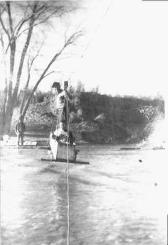{kind=link}
After we graduated from high school we went to our cousin’s graduation in Dove Creek. Your Dad gave the benediction.
We knew when your Dad’s back itched because he liked to scratch it on the wall. He liked wood.
In January, on the fourteenth [just two days before he died] I had to go to Grand Junction,[Colorado]. On our way we stopped to see your Daddy [in the hospital]. He was sitting up busily reading the scriptures. On the sixteenth we returned to Monticello. Daddy, Aunt Afton, and Moma went to the hospital. They were all able to see your Dad alive. All of you Barton children had real sore mouths for the occasion. [That may have been the time we had thrush and had to paint our mouths with purple medicine.] Jerry Norton came down for the funeral. I remember Leonard Bartell telling him he was glad to see him again, but not for the occasion that brought them together.
Remembering Uncle Evan H. by Candis, a niece
One of my first memories of Uncle Evan H. was probably soon after he came home from his mission. We, probably Uncle Evan H., Philis and I were sitting out on the old red pick-up eating some of Grandma B’s fresh hot bread, and honey,
After your folks were married we lived at Dalton’s ranch in Montezuma. One day they came down when we were doing the wash. I remember they helped us finish it up.
At Easter time Philis and I were able to go to Monticello and go on an Easter picnic with your folks and Grandma. We had a fun time. But I didn’t enjoy wearing Grandpa’s old red handkerchief Grandma made me tie on my head.
When your Dad was ready to come home [from his mission] Uncle Trav and Aunt Oral took Grandma B. back to get him. They bought presents for the grandchildren and saved them for Christmas. We were living in the little black tar-papered house you later lived in. [Norma and Evan H. lived there while she was expecting Bodell. Norma said that seeing that black tar-paper made her morning sickness worse.] Philis received a nurse set. I received a doctor’s set and felt bad because I didn’t really think there were women doctors. They brought LaNell a “nigger baby”. She started to take it, then backed away and wouldn’t have anything to do with it. (We aren’t sure when your dad came home. Maybe they were just homecoming gifts not Christmas.)
Do you remember seeing a picture of the whole Barton family on Grandma B.’s front porch? That day almost everyone just happened to come to Grandma’s So we called Uncle Wesley and had him come. Then we asked one of the Fullmers [the neighbors across the street] to come and take some pictures.
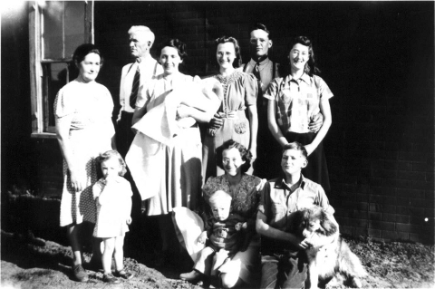{kind=link}
We asked LaNell what she remembered. She said she remembered the summer we stayed in Grandma’s house while she was in the Northwest with Nortons, that your dad came in [to Monticello to visit]. She remembers Mom and your dad both sitting on the ground visiting. She remembers being in your home “Out East” several times. One time, probably soon after you moved in, your dad took us on a tour of the house. She can barely recall when you and your folks lived in Grandma’s little house. [We lived there probably from about the time Bodell was born until after Kymm was born.
A note about the pictures. The ones of the tractor and the skates came off the web. Oral, Evan H.’s sister, gave the picture of the Blue Mountains to Bodell. The pictures of the wagon and the cabin and the bean field were taken at the actual site by Mark Esplin while visiting the farm in Eastland. It has the rubber tires on it. The people in the picture are Daniel, Robert, Shennie, Benjamin and Bodell Barton Esplin. There is no information to say who the mission companion is in the mission picture. The picture of the George Barton family is not the correct one, but the baby in Eloise’s lab is Joel. The other pictures are in possession of Bodell.
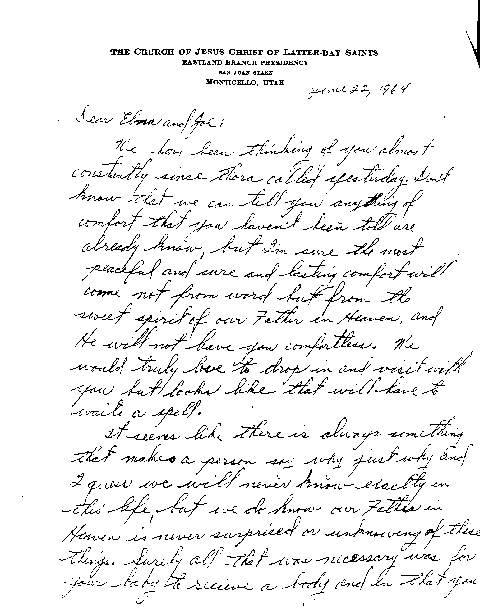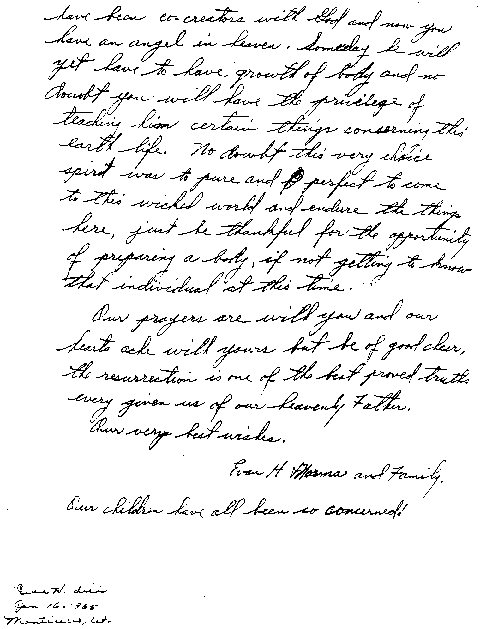
{kind=link}
{kind=link}
- 12 Oct 2010 - Converted to markdown by Daniel Esplin.